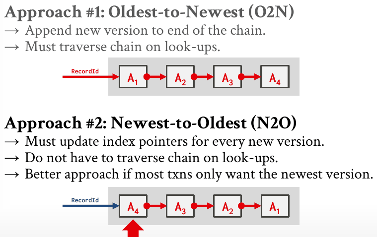
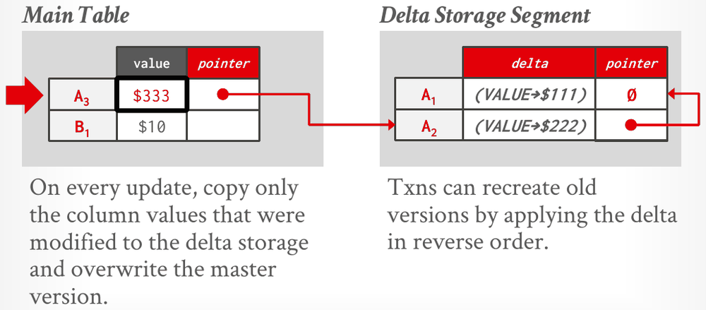
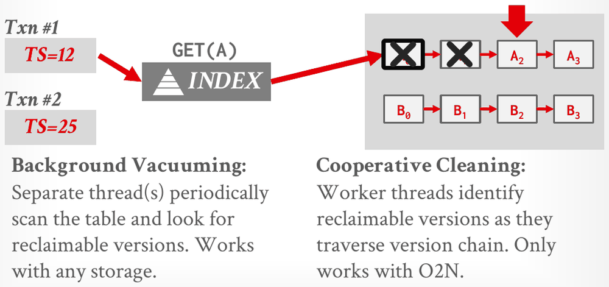
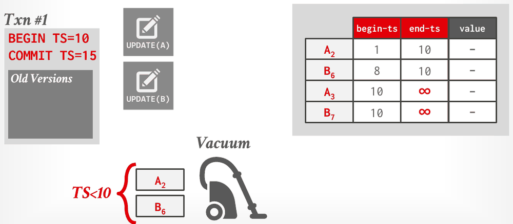
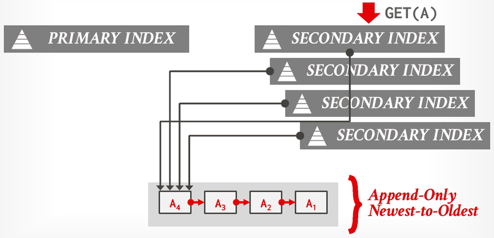

Database Internals in Go · Unit 7 · Lesson 6
MVCC Design: Version Storage, Garbage Collection, and Indexes
Compare append-only, time-travel and delta version storage and the two version-chain orders, decide which versions a garbage collector may reclaim, and explain why MVCC indexes hold duplicate keys and treat a primary-key update as a delete followed by an insert.
The previous lesson said what multi-versioning guarantees: each transaction reads a snapshot, and the first writer of an object wins. It left open where the old versions are kept, how a reader finds the one it needs, when a version can be thrown away, and what an index points to when one key has several versions. Those are four of slide 11's five MVCC design decisions, and this lesson covers them. Project 4 makes one of these choices in each area, and the last section maps them out.
Unit 7, Lesson 4: which anomalies may happen under READ COMMITTED but not under REPEATABLE READ?
Unit 1, Lesson 2: why should an application never rely on a tuple's record ID?
Unit 3, Lesson 4: what does Lecture #08 recommend for storing duplicate keys in a B+tree?
Version chains
Slide 14: the DBMS uses a pointer field in each tuple to link all the physical versions of one logical tuple into a version chain. The notes describe it as a linked list of versions sorted by timestamp. A reader follows the chain until it reaches the version visible to it. Indexes always point to the head of the chain, which is the newest or the oldest version depending on the design. Different storage schemes then decide where each version lives and what it contains.
Where the versions live
Slide 15 lists three schemes and how common each is:
- Append-only storage (less common): new versions are appended to the same table space as the old ones.
- Time-travel storage (rare): old versions are copied to a separate table space.
- Delta storage (common): only the original values of the modified attributes are copied, into a separate delta record space.
Append-only storage and chain order
In append-only storage every physical version of a tuple sits in the main table, intermixed with all the other tuples' versions. Each update appends a complete new version into an empty slot of the table and links it into the chain (slide 16). The slides put "Don't Do This!" beside it, with a screenshot of Andy Pavlo's blog post "The Part of PostgreSQL We Hate the Most"; the lecture's survey lists Postgres as append-only.
The chain can run in either direction (slide 17):
- Oldest-to-newest (O2N): a new version is appended at the end of the chain, so the head stays put and the index never changes. A lookup for the newest version must traverse the whole chain.
- Newest-to-oldest (N2O): the new version becomes the head, so the index pointers must be updated for every new version. A lookup for the newest version stops at the head, with no traversal. The slide calls it the better approach if most transactions only want the newest version, and the notes call it typically better.

Time-travel and delta storage
Time-travel storage keeps only the newest version in the main table, called the master version. On every update the DBMS copies the current version to a separate time-travel table, overwrites the master version in the main table and updates the pointers (slide 18). In the slide, the main table ends with A3 = $333, pointing to A2 = $222 and then A1 = $111 in the time-travel table.
Delta storage copies less. On every update the DBMS copies only the column values that were modified to the delta storage segment, then overwrites the master version (slide 19). To read an older version, a transaction starts from the master version and applies the deltas in reverse order, newest first. The notes compare the two: delta storage has faster writes than time-travel storage, and slower reads.

#20 Multi-Version Concurrency Control, "Version storage methods" (51:23), slides 14–19: version chains, append-only storage and the two chain orders, time-travel storage and delta storage.
Garbage collection
Versions pile up, and the DBMS has to remove the ones nobody needs. Slide 20 defines a reclaimable version as one that no active transaction can see, or one created by a transaction that aborted. Two design questions follow: how to find expired versions, and how to decide when it is safe to reclaim their memory. Slide 21 gives two families of answers.
Tuple-level garbage collection
Tuple-level GC finds old versions by examining the tuples themselves, in one of two ways (slide 22).
Background vacuuming: separate threads periodically scan the table and look for reclaimable versions. It works with any storage scheme. The slide's example has two active transactions, with TS 12 and TS 25, and three versions: A100 with begin-ts 1 and end-ts 9, B100 with 1 and 9, and B101 with 10 and 20. Neither active timestamp falls inside A100's or B100's range, so the vacuum removes both. B101 stays, because the transaction with TS 12 can still see it. A simple optimization is a bitmap of the blocks modified since the last scan (the slide's "dirty block bitmap"), so the vacuum can skip blocks that haven't changed.
Cooperative cleaning: worker threads remove reclaimable versions themselves as they traverse version chains during normal queries. This only works with O2N chains. In an O2N chain the old versions sit at the front, so a reader looking for a newer version walks past them anyway. The notes add the catch: data that is never accessed is never cleaned.

When the cleaning removes the head of the chain, the index has to point at the new head; the slide's next build shows the index pointing at A2.
Transaction-level garbage collection
In transaction-level GC, each transaction keeps track of its own read and write sets, so the DBMS doesn't have to scan tuples to find old versions (slides 23–24). When a transaction commits or aborts, it hands that information to a centralized vacuum worker, and the DBMS periodically determines when all the versions created by a finished transaction are no longer visible. In the slide, Txn #1 begins with TS 10, updates A and B and commits with TS 15. Its updates replaced A2 (begin-ts 1) and B6 (begin-ts 8), both ending at 10, so it keeps A2 and B6 as its old versions. The vacuum can reclaim them once no active transaction has a timestamp below 10.

#20 Multi-Version Concurrency Control, "Garbage collection" (1:01:10), slides 20–24: what is reclaimable, background vacuuming, cooperative cleaning and transaction-level GC.
Indexes
Slide 25 starts with the primary-key index, which points to the head of each version chain. How often the DBMS must update it depends on whether an update creates a new chain head. One case is fixed: if a transaction updates a tuple's primary-key attributes, the DBMS treats it as a DELETE followed by an INSERT. The old key has to keep leading to the old versions for older snapshots, while the new key leads to the new tuple, so the primary-key index ends up with two entries, one for each.
Secondary indexes are harder, and slide 26 gives two choices for what they store:
- Logical pointers: a fixed identifier per tuple that never changes, either the primary key or a tuple id. This needs an extra indirection layer to map the identifier to the physical location. With the primary key, a lookup goes through the secondary index to the key, then through the primary index to the chain head (slide 27).
- Physical pointers: the physical address of the version chain head. Every time the head changes, every index has to be updated, which the notes call very expensive.

Duplicate keys
MVCC indexes usually store no version information with their keys; the exception is index-organized tables, as in MySQL (slide 28). So the version an index entry leads to depends on the snapshot, and the same key may lead to different logical tuples in different snapshots. That is the MVCC duplicate key problem, and slide 29 traces it:
- Txn #1 begins with TS 10 and reads A: version A1, valid from 1 onwards.
- Txn #2 begins with TS 20, updates A (creating A2 from 20) and then deletes A, and commits with TS 25. A1's range becomes [1, 20) and the deleted A2's [20, 20).
- Txn #3 begins with TS 30 and inserts a new tuple with key A: version A3 from 30 onwards. It is a different logical tuple, so the index gets a second entry for key A.
- Txn #1 reads A again and still reaches A1 through the first entry.

Slide 30 lists what this demands. Each index's data structure must support non-unique keys. Primary-key and unique indexes need extra execution logic for conditional inserts: atomically check whether the key exists, then insert. And a worker may get several entries back for a single fetch, so it must follow each pointer to find the physical version its snapshot can see.
#20 Multi-Version Concurrency Control, "Index management" (1:08:55), slides 25–30: primary keys, logical and physical pointers for secondary indexes, and the duplicate key problem.
Deletes
Slide 31: the DBMS physically deletes a tuple only when no version of the logically deleted tuple is visible any more. Once a tuple is deleted, no newer version of it can follow the newest one, and the slide ties this to the first-writer-wins rule of the previous lesson. The DBMS needs some way to record that the tuple was logically deleted at a point in time, and slide 32 gives two:
- A deleted flag, kept in the tuple header or in a separate column, saying that the logical tuple was deleted after its newest physical version.
- A tombstone tuple: an empty physical version that means "deleted". To keep it cheap, the slide stores tombstones in a separate pool, with only a special bit pattern in the version chain pointer.
How real systems combine the choices
Slide 33 lists the choices nine real systems made:
| System | Protocol | Version storage | Garbage collection | Indexes |
|---|---|---|---|---|
| Oracle | MV2PL | Delta | Vacuum | Logical |
| Postgres | MV-2PL/MV-TO | Append-only | Vacuum | Physical |
| MySQL-InnoDB | MV-2PL | Delta | Vacuum | Logical |
| MSSQL Hekaton | MV-OCC | Append-only | Cooperative | Physical |
| SingleStore | MV-OCC | Delta | Vacuum | Physical |
| SAP HANA | MV-2PL | Time-travel | Hybrid | Logical |
| DuckDB | MV-OCC | Delta | Txn-level | Logical |
| HyPer | MV-OCC | Delta | Txn-level | Logical |
| CockroachDB | MV-2PL | Delta (LSM) | Compaction | Logical |
Delta storage is the most common scheme in the table. The DuckDB and HyPer rows are the ones to remember: the Project 4 writeup says its protocol is the one those systems use.
What Project 4 builds
Project 4's design picks one option from each of this lesson's sections:
- Delta storage, newest to oldest. The writeup calls its storage model "similar to the delta table architecture discussed in the lecture." The table heap always holds the newest version of every tuple, and the older versions are deltas called undo logs, each holding only the columns an update changed. The tuple in the table heap and its undo logs form a singly linked version chain, newest first. There is no physical delta table: each transaction keeps the undo logs it created in its own in-memory workspace. To read an older version, BusTub's
ReconstructTupleapplies undo logs to the base tuple from the newest backwards, slide 19's "applying the delta in reverse order". In the Go port, anUndoLoghas the fieldsIsDeleted,ModifiedFields,Tuple,TsandPrevVersion. - A watermark instead of a list of active timestamps. The watermark is the lowest read timestamp among all transactions that have not yet committed or aborted, or the latest commit timestamp if there are none. It is the bound slide 20 needs: a version that the transaction with the lowest read timestamp can't see, no transaction can see. In the Go port it lives in
watermark.go, whoseAddTxnandRemoveTxnyou write. - Stop-the-world, transaction-level GC. Garbage collection runs only when it is called, and the tests call it only while all transactions are paused. It removes every committed or aborted transaction whose undo logs are all invisible at the watermark. Because undo logs are grouped by the transaction that wrote them, this is close to slide 23's transaction-level GC. The writeup's example has a watermark of 3: transaction 1's undo logs have all been overwritten by commits at or below 3, so it goes; transaction 2 stays, because its undo log for tuple C is still accessible: C has had no further update that a reader at timestamp 3 could see instead.
- A deleted flag. Both a base tuple's metadata and an undo log carry an
is_deleted_flag (the GoUndoLog'sIsDeleted), the deleted-flag approach of slide 32. - A primary-key index whose entries never go away. Entries are never removed, and each always points to the same record ID; inserting a key that was deleted reuses the deleted tuple. A primary-key update is implemented, in the writeup's words, "as a delete on the original key and an insert on the new key", as slide 25 says. The tests create no secondary indexes, so the logical-versus-physical question doesn't come up.
Unit 8 implements this in order: timestamps and the watermark, tuple reconstruction, the MVCC sequential scan, inserts and commits, undo logs for updates and deletes, garbage collection and abort, the primary-key index, and finally primary-key updates and serializable verification. In the Go port the two files you edit are transaction_manager.go and watermark.go; the rest of the concurrency package is already in place.
Work it out
-
What to think about
A version is reclaimable when no active transaction can see it. Which active timestamps fall inside each version's range?
The method
A transaction with timestamp t can see a version if begin-ts ≤ t < end-ts. Check 12 and 25 against each of the three ranges; a version no active timestamp falls in is reclaimable.
The result
A100 and B100 are reclaimable: neither 12 nor 25 lies in [1, 9). B101 stays, because 12 lies in [10, 20). Once only TS 25 is active, B101 is reclaimable too, since 25 is outside [10, 20).
-
What to think about
Which version can a reader get without applying any delta, and in which order does the chain reach the others?
The method
Start from the master version in the main table and apply deltas in reverse order, newest first, stopping at the version you want.
The result
A2: start from $333 and apply A2's delta, giving $222 (one delta). A1: continue with A1's delta, giving $111 (two deltas). The older the version, the more deltas a reader applies, which is why the notes call delta storage slower to read.
-
What to think about
Txn #3's insert created a new logical tuple, not a new version of the old one. And A2 has an empty range.
The method
The versions are A1 [1, 20), A2 [20, 20) (deleted) and A3 [30, ∞). For each timestamp, follow both index entries and keep the version whose range contains it, if any.
The result
Two entries, one per logical tuple. TS 10 reads A1. TS 27 finds nothing: A1 ended at 20, A2's range [20, 20) is empty because Txn #2 deleted it, and A3 starts at 30, so for this snapshot key A doesn't exist. TS 35 reads A3.
The homework behind these questions
The questions marked HW5 come from CMU's Homework #5: Question 4, with the original figures. Work each one out on paper first, then click the option you got. The quiz tells you at once whether it matches CMU's official answer, and explains why. To compare your working step by step, open the official solutions for Question 4.
Check your understanding
These five questions are HW5 Question 4's true-or-false statements, rewritten so each option is a claim. Assume every DBMS here supports multi-versioning of tuples.
HW5 Q4(a)i: in an MVCC DBMS with append-only version storage, which chain order is faster for queries that read the latest version through an index scan on the primary key?
HW5 Q4(a)ii: "The DBMS can use cooperative garbage collection with oldest-to-newest (O2N) version chain ordering only if it also uses logical pointers for secondary indexes." Which assessment is right?
HW5 Q4(b)i: in an MVCC DBMS with delta version storage, what can background vacuuming remove?
HW5 Q4(b)ii: "If the DBMS uses delta storage with newest-to-oldest ordering, all reclaimable versions will be found in the delta storage area." Which assessment is right?
HW5 Q4(b)iii: in an MVCC DBMS with delta storage, a transaction modifies an existing tuple's primary-key attributes. What must the DBMS do?
Primary sources: CMU 15-445/645 Fall 2025 Lecture #20 slides 11 and 14–35 and notes (sections 2–5); Homework #5 Question 4 and its official solutions; the Project #4 writeup (Background, Tasks 1.2, 2.1, 3.5 and Task #4); BusTub src/include/concurrency/transaction.h, src/include/concurrency/watermark.h and src/include/execution/execution_common.h at commit d49b823; the Go port's intro_to_db/concurrency/ package.